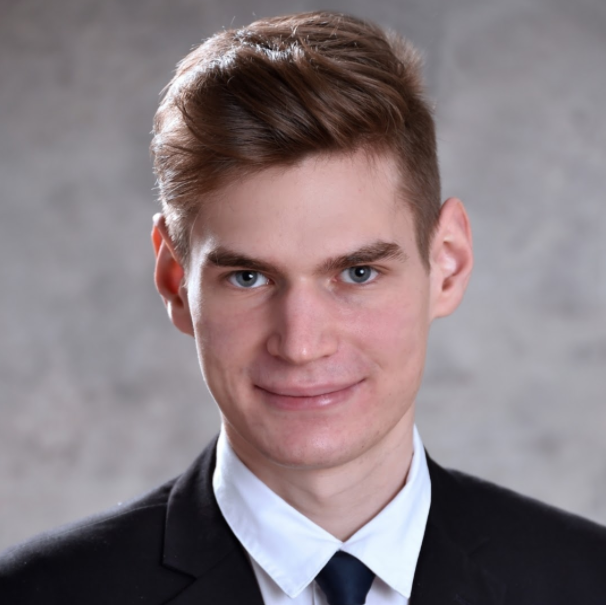
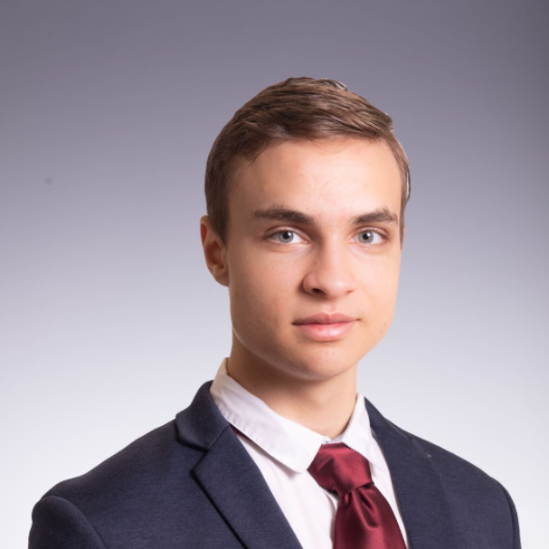
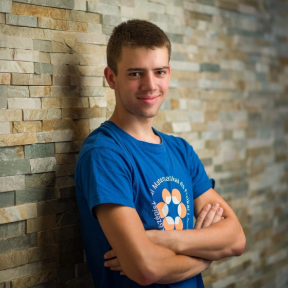
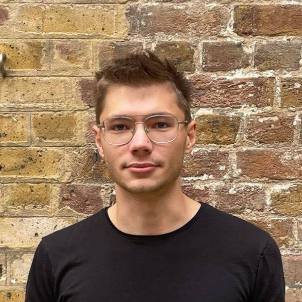

Kornél György Szabó
 TODO: translate. Szabó Kornél vagyok, a Cambridge-i Egyetem informatika szakos hallgatója.
Középiskolás tanulmányaimat a Budapesti Fazekas Mihály Gyakorló Általános Iskola és Gimnázium speciális matematika tagozatán végeztem. Ezen évek alatt sokat foglalkoztam versenyprogramozással és matematikaversenyekkel, a Nemzetközi Informatikai Diákolimpián bronzérmes, a Közép-Európai Informatikai Diákolimpián bronzérmes, a Nemzetközi Matematikai Diákolimpián bronzérmes, a Közép-Európai Matematikai Diákolimpián ezüstérmes lettem.
Magyar versenyeken is sikeresen szerepeltem, informatika OKTV-n 2., matematika OKTV-n 10. helyezett lettem. Gimnáziumi éveim végén kezdtem az Alphacademyben tanítani, de korábban is foglalkoztam tehetséggondozással, például a Pósa-táborokban történő segítősködéseim alkalmával. Hobbijaim közé tartozik az olvasás, az evezés és a falmászás.
Andor Vári-Kakas
 TODO: translate. Vári-Kakas Andor vagyok, a ETH Zürich egyetem informatika mesterszakos hallgatója, ahol elméleti informatikára illetve gépi tanulásra specializálódom. Az alapszakot Cambridge-ben végeztem informatika szakon. Középiskolás tanulmányaimat a Budapesti Fazekas Mihály Gyakorló Általános Iskola és Gimnázium speciális matematika tagozatán teljesítettem. Gimnáziumi éveim alatt sokat foglalkoztam versenyprogramozással és matematikaversenyekkel: országos bajnoka vagyok a Zrínyi Ilona matematikaversenyek, a Bolyai matematika csapatversenynek, illetve a Nemes Tihamér programozásversenynek. Emellett bronzérmet szereztem a Nemzetközi Nyelvészeti Diákolimpián Prágában. A cambridge-i egyetemen másodévben 2., harmadévben 7. helyet értem el az évfolyamon. A tanítás már régóta érdekel, ismerőseimet 4 éve készítem fel versenyekre, érettségire, illetve dolgozatokra, és 2 éve csatlakoztam az Alphacademyhez. Lételemem a sportolás (pl. futsal, ultimate frisbee, asztalitenisz), elhivatott vagyok a sportolás fontosságával kapcsolatban a szellemi tevékenységek kiegészítése végett.
Bence Hervay
 TODO: translate. A Cambridge-i egyetem informatika szakos hallgatója vagyok, az Alphacademy-hez a középiskolai tanulmányaim utolsó évében csatlakoztam. A Budapesti Fazekas Mihály Gimnázium matek tagozatára jártam, az itt eltöltött 6 év alatt sokat foglalkoztam matematikával (OKTV 12.), informatikával (OKTV 13. és 14.), és fizikával (OKTV 1. és 7.). Ezen három tantárgy ötvözése segített számos robotika versenyen is, a kedvencem a 2017-es First Global Challenge robotépítő- és programozó világbajnokság volt, melyet megnyertünk és ennek köszönhetően az elnök családja meghívta a csapatot a Fehér Házba. Öt évig akrobatikus kosárlabdáztam a FaceTeam tagjaként, emellett rendszeresen röplabdáztam és kosaraztam, jelenleg pedig sportszerűen ultimate frizbizek.
Révész János
 TODO: translate. Révész János vagyok, elméleti fizikus hallgató a londoni University College London egyetemen. Középiskolába a miskolci Földes Ferenc Gimnázium speciális matematika tagozatos osztályába jártam. Informatika irányába csak gimnázium végén kezdtem el komolyabban érdeklődni, végül a Magyar Tudományos Akadémia Gábor Dénes pályázatán 2. díjat kaptam a fény terjedését modellező pályamunkámért. Egyetemen kívül szívesen futok, zenélek vagy olvasok.